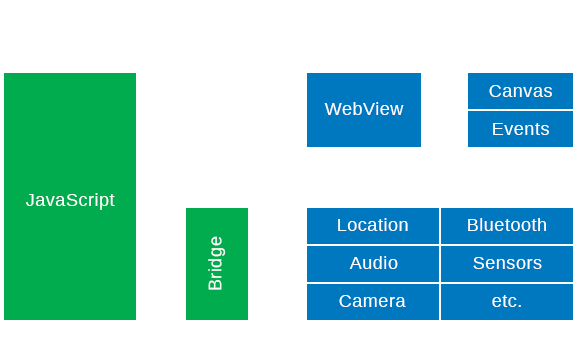
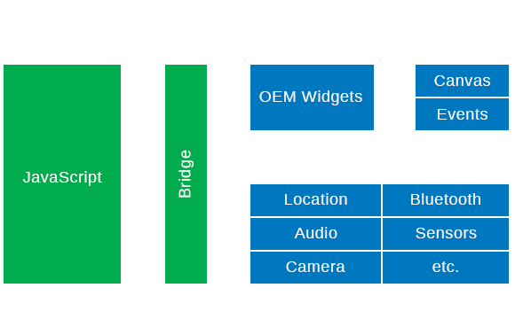
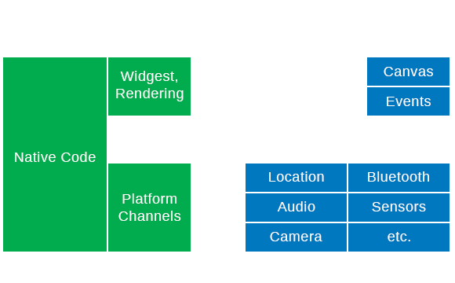
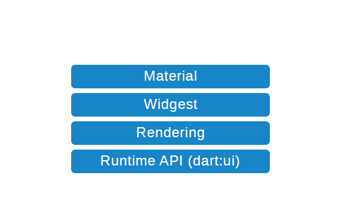
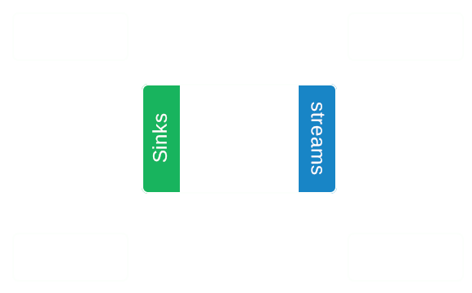
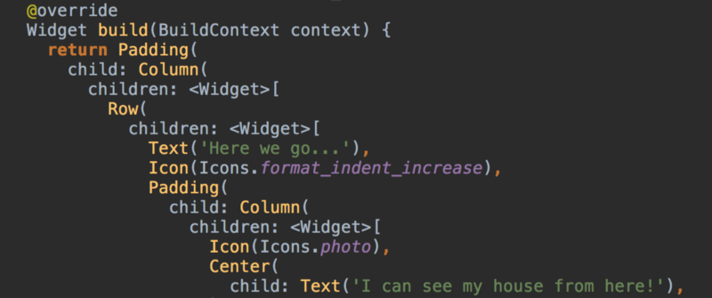
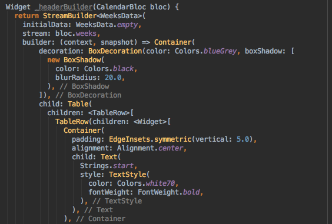
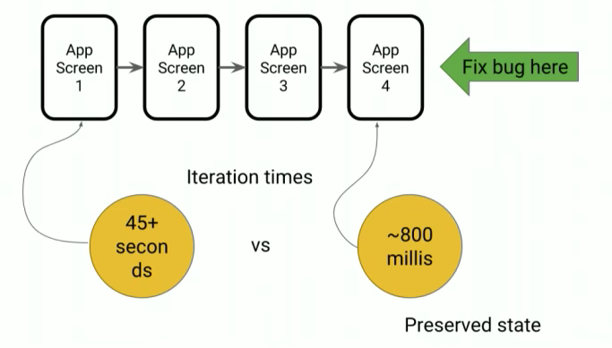
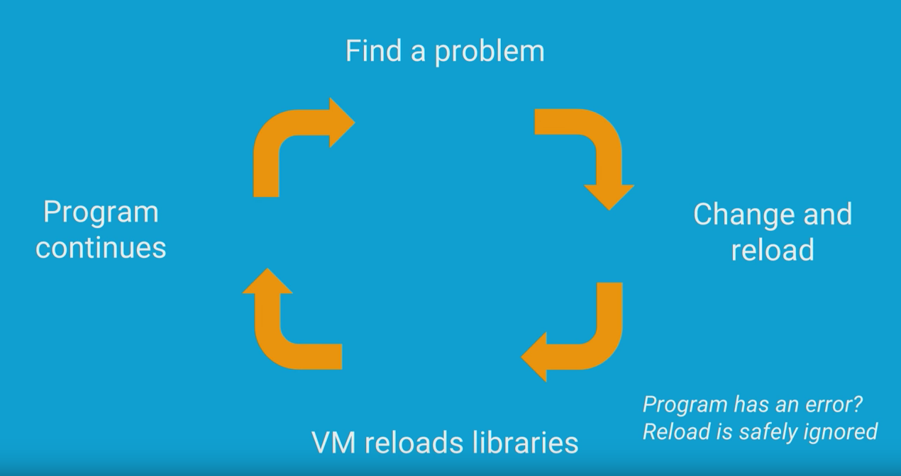

Flutter
"Silver Bullet" мобильной разработки
Юрий Лучанинов / mobidev.biz
Миссия: "Build the best way to develop for mobile"
Результат: "Build beautiful native apps in record time"
Предистория
- Цель: создать браузер без лагов и с гладкой анимацией.
- Исполнители: Команда разработчиков Chrome.
-
Инструмент: эксперимент - “давайте отбросим все что связывает нас с вебом”. - Результат: в 20 раз быстрее Chrome.
Так что же такое Flutter?
is Google’s mobile app SDK for crafting high-quality native interfaces on iOS and Android in record time.
Как “Build the best way to develop for mobile” ?
- Одна команда разработки под любую OS.
- Фитчу делать один раз, и она должна выглядеть идеально и как хочет дизайнер и как ожидает клиент, а не как может разработчик!
- Кастомизация должна быть легкой и гибкой.
- Девелопмент цикл должен быть меньше секунды.
Как решаются эти задачи:
- Архитектура платформы.
- Язык разработки.
-
Специфика разработки:
- Widgets.
- Hot Reload.
- Реактивность во всем.
Архитектура нативных приложений:

Архитектура PhoneGap приложений:
ReactNative | NativeScript:
Flutter:
Чем же хорош Dart:
- JIT для девелопмента, ahead of time compiled для продакшена.
- Опциональная, строгая типизация.
- Стримы.
- Tree shaking compiler (dead code removal).
- Прогрессивный GC, работа в бекграунде.
- Легкость в изучении.
- Покрывает весь стек платформы.
Покрывает весь стек платформы:
А причем здесь Стримы?
Business Logic Components (BLoC)
Специфика разработки:
Все виджеты !
UI это код:
Абсолютно все:
Реактивность из коробки:
Все immutable !
Три вида виджетов:
- Stateless Widget
- Stateful Widget
- Inherited widget
Что решает такой подход к виджетам:
- Виджет это функция композиции - поэтому вложенность не важна.
- Любая кастомизация - любой дизайн.
- Вы контролируете каждый пиксель на скрине, в отличие от OEM виджетов.
- Вы пишете такой UI как хотите, а не такой как можете наверстать. И без ограничения по производительности.
Специфика разработки:
Hot reload!
Hot reload:

Почему это важно:
На чем это технически реализовано:
- Dart
- Immutable widgets
When hot reload is invoked, the host machine looks at the edited code since the last compilation. The
following libraries are recompiled:
Any libraries with changed code
The application’s main library
The libraries from the main library leading to affected libraries
In Dart 2, those libraries’ Dart source code are turned into kernel files and sent to the mobile device’s Dart VM
The Dart VM re-loads all libraries from the new kernel file. So far no code is re-executed
The hot reload mechanism then causes the Flutter framework to trigger a rebuild/re-layout/repaint of all existing widgets and render objects
The application’s main library
The libraries from the main library leading to affected libraries
In Dart 2, those libraries’ Dart source code are turned into kernel files and sent to the mobile device’s Dart VM
The Dart VM re-loads all libraries from the new kernel file. So far no code is re-executed
The hot reload mechanism then causes the Flutter framework to trigger a rebuild/re-layout/repaint of all existing widgets and render objects
Зачем: уменьшение общего времени разработки более чем на 30%!
А что по поводу перформанса?:
An app’s performance is determined by more than one measure. Performance
sometimes refers to raw speed,
but also to the UI’s smoothness and lack of stutter. Other examples of performance include I/O or
network speed. This page primarily focuses on the second type of performance (UI smoothness), but you
can use most of the same tools to diagnose other performance problems.
Что еще нужно знать:
- DartPub
- Threads
- Native pipes
- Existing native apps
- Fuchsia
- Desktop
Что мы пробовали:
Что понравилось:
- Hot Reload !
- Всегда работает одинаково и на iOS и на Android
- Потрясающая документация
- Божественная кастомизация
- Очень высокое качество компонентов и документации
- Анализ пакетов в Dart Pub
- опциональная, строгая типизация
Что не понравилось:
- Dart все таки другой язык, надо привыкнуть
- В репозиторий надо класть платформозависимые файлы
- Сериализация
- Платформозависимые ресурсы не индексируются
На что обратить внимание:
- Внимательно подбирать версии пакетов
- Комманды Flutter, например > flutter clean
- Поля виджета(не класса данных) всегда final
- 'import "package:my_aa/my_model.dart";'
и 'import "./my_model.dart";' - Три типа виджетов: StatelessWidget, StateFullWidget, InheritedWidget
Что не делать ни в коем случае:
- Мутировать виджеты
- Лезть в external libraries
- Не переименовывать директорию проекта
Что прийдеться сделать:
- Учить Dart
- Учить BLoC паттерн, streams & RX
Готов ли Flutter к продакшену?
- Один баг платформы на 2 проектах
- Карты, внешние библиотеки с OEM виджетами
- 90% - бизнес приложений
Итого:
- Отсутствие необходимости полишинга и оптимизации перформанса
- Продуктивсность девелопера